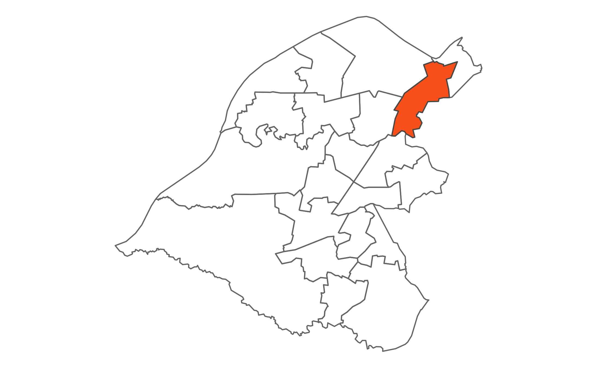

 Longford is a densely populated urban area in north east of the Borough. It is home to the world famous Lancashire County Cricket Club. Longford Park, one of the Borough's larger parks, has been the finishing point for the annual Stretford Pageant. Longford Athletics stadium can also be found adjacent to the park.